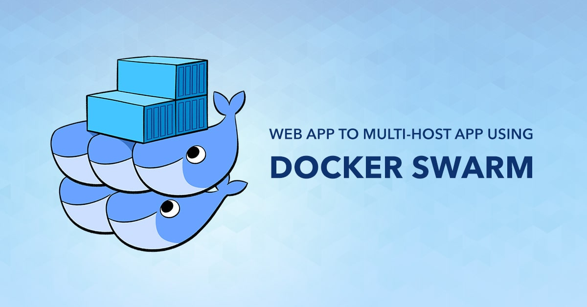
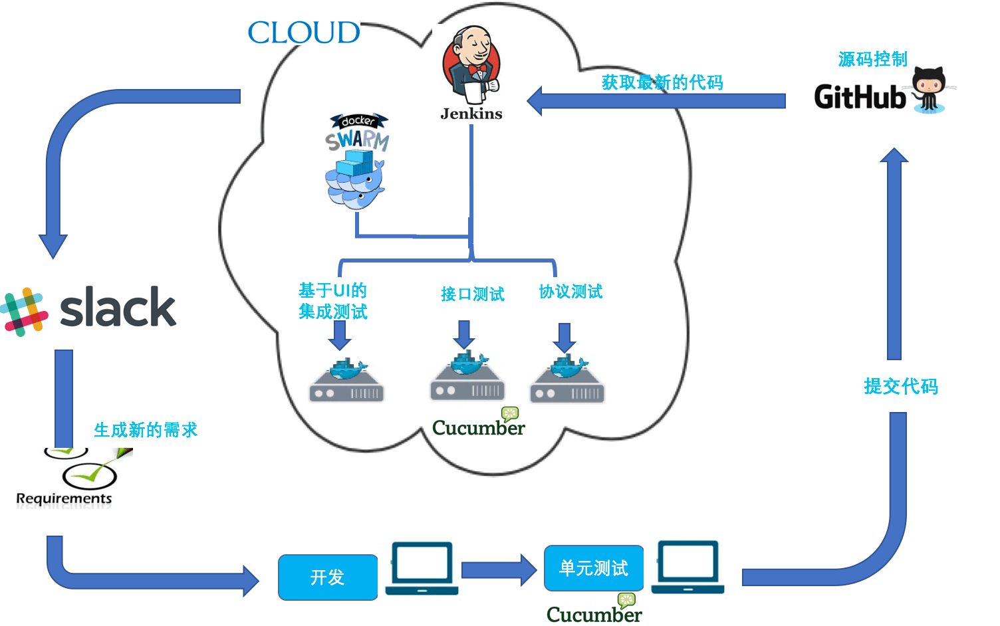

DockerSwarm 目前是 Docker 社区的入室独家弟子
- 引用来自Docker 从入门到实践 => 侵权删除

从 Docker1.12 开始 Swarm mode 已经内嵌入 Docker 引擎，成为了 docker 子命令 docker swarm。目前，Swarm 是 Docker 社区提供的唯一一个原生支持 Docker 集群管理的工具。它可以把多个 Docker 主机组成的系统转换为单一的虚拟 Docker 主机，使得容器可以组成跨主机的子网网络。Swarm mode 内置 kv 存储功能，提供了众多的新特性，比如具有容错能力的去中心化设计、内置服务发现、负载均衡、路由网格、动态伸缩、滚动更新、安全传输等。使得 Docker 原生的 Swarm 集群具备与 Mesos、Kubernetes 竞争的实力。
集群管理集成进 Docker 命令
- 使用内置的集群管理功能，我们可以直接通过
Docker CLI命令来创建Swarm集群，然后去部署应用服务，而不再需要其它外部的软件来创建和管理一个Swarm集群。
- 使用内置的集群管理功能，我们可以直接通过
去中心化设计
Swarm集群中包含Manager和Worker两类Node形式，我们可以直接基于Docker Engine来部署任何类型的Node。而且，在Swarm集群运行期间，我们既可以对其作出任何改变，实现对集群的扩容和缩容等，如添加Manager Node，如删除Worker Node，而做这些操作不需要暂停或重启当前的Swarm集群服务。
声明式服务模型
- 在我们实现的应用栈中，
Docker Engine使用了一种声明的方式，让我们可以定义我们所期望的各种服务的状态，例如，我们创建了一个应用服务栈：一个Web前端服务、一个后端数据库服务、Web前端服务又依赖于一个消息队列服务。
- 在我们实现的应用栈中，
服务扩容缩容
- 对于我们部署的每一个应用服务，我们可以通过命令行的方式，设置启动多少个
Docker容器去运行它。已经部署完成的应用，如果有扩容或缩容的需求，只需要通过命令行指定需要几个Docker容器即可，Swarm集群运行时便能自动地、灵活地进行调整。
- 对于我们部署的每一个应用服务，我们可以通过命令行的方式，设置启动多少个
协调预期状态与实际状态的一致性
Swarm集群Manager Node会不断地监控集群的状态，协调集群状态使得我们预期状态和实际状态保持一致。例如我们启动了一个应用服务，指定服务副本为10，则会启动10个Docker容器去运行。如果某个Worker Node上面运行的2个Docker容器挂掉了，则Swarm Manager会选择集群中其它可用的Worker Node，并创建2个服务副本，使实际运行的Docker容器数仍然保持与预期的10个一致。
多主机网络
- 我们可以为待部署应用服务指定一个
Overlay网络，当应用服务初始化或者进行更新时，Swarm Manager在给定的Overlay网络中为Docker容器自动地分配IP地址，实际是一个虚拟IP地址(VIP 地址)。
- 我们可以为待部署应用服务指定一个
服务发现
Swarm Manager会给集群中每一个服务分配一个唯一的DNS名称，对运行中的Docker容器进行负载均衡。我们可以通过Swarm内置的DNS Server，查询Swarm集群中运行的Docker容器状态。
负载均衡
- 在
Swarm内部，可以指定如何在各个Node之间分发服务容器，实现负载均衡。如果想要使用Swarm集群外部的负载均衡器，可以将服务容器的端口暴露到外部。
- 在
安全策略
- 在
Swarm集群内部的Node，强制使用基于TLS的双向认证，并且在单个Node上以及在集群中的Node之间，都进行安全的加密通信。我们可以选择使用自签名的根证书，或者使用自定义的根CA证书。
- 在
滚动更新
- 对于服务需要更新的场景，我们可以在多个 Node 上进行增量部署更新，
Swarm Manager支持通过使用Docker CLI设置一个delay时间间隔，实现多个服务在多个Node上依次进行部署。这样可以非常灵活地控制，如果有一个服务更新失败，则暂停后面的更新操作，重新回滚到更新之前的版本。
- 对于服务需要更新的场景，我们可以在多个 Node 上进行增量部署更新，
1. 基本架构
Swarm 是使用 SwarmKit 构建的 Docker 引擎内置(原生)的集群管理和编排工具

1.1 节点的分类
Swarm 的节点分类
节点分为管理(manager)节点和工作(worker)节点。运行 Docker 的主机可以主动初始化一个 Swarm 集群或者加入一个已存在的 Swarm 集群，这样这个运行 Docker 的主机就成为一个 Swarm 集群的节点 (node) 。
管理节点: 用于
Swarm集群的管理，docker swarm命令基本只能在管理节点执行（节点退出集群命令docker swarm leave可以在工作节点执行）。一个Swarm集群可以有多个管理节点，但只有一个管理节点可以成为leader，leader通过raft协议实现。工作节点: 是任务执行节点，管理节点将服务 (
service) 下发至工作节点执行。管理节点默认也作为工作节点。你也可以通过配置让服务只运行在管理节点。

1.2 服务和任务
Swarm 的服务任务
任务(Task): 是 Swarm 中的最小的调度单位，目前来说就是一个单一的容器。
服务(Services): 是指一组任务的集合，服务定义了任务的属性。服务有以下两种模式，两种模式通过 docker service create 的 --mode 参数指定。
global services每个工作节点上运行一个任务replicated services按照一定规则在各个工作节点上运行指定个数的任务

2. 创建集群
演示创建一个包含一个管理节点和两个工作节点的最小 Swarm 集群
- [1] 初始化集群
# 首先创建一个Docker主机作为管理节点
$ docker-machine create -d virtualbox \
--virtualbox-boot2docker-url ~/.docker/machine/cache/boot2docker.iso \
manager
# 查看对应IP地址
$ docker-machine ls
NAME ACTIVE DRIVER STATE URL SWARM DOCKER ERRORS
manager - virtualbox Running tcp://192.168.99.101:2376 v18.09.7
# 进入对应管理节点
$ docker-machine ssh manager
# 在管理节点初始化一个Swarm集群
# 执行 docker swarm init 命令的节点自动成为管理节点
# 如果你的Docker主机有多个网卡且拥有多个IP地址，必须使用--advertise-addr指定IP地址
$ docker swarm init --advertise-addr 192.168.99.101
Swarm initialized: current node (4kgg0h3ldxjg1bmxk9fnfng0h) is now a manager.
To add a worker to this swarm, run the following command:
docker swarm join --token SWMTKN-1-2p28iqmy59o0iezjv5y0eq1obpu3mh3yzoc7bsj3cdhp9p3v25-abxa624v9i1pfbr4iz1qsuytn 192.168.99.101:2377
To add a manager to this swarm, run 'docker swarm join-token manager' and follow the instructions.- [2] 增加工作节点
# 创建第一个Docker主机作为工作节点
$ docker-machine create -d virtualbox \
--virtualbox-boot2docker-url ~/.docker/machine/cache/boot2docker.iso \
worker1
# 进入对应工作节点
$ docker-machine ssh worker1
( '>')
/) TC (\ Core is distributed with ABSOLUTELY NO WARRANTY.
(/-_--_-\) www.tinycorelinux.net
# 工作节点加入到集群中
$ docker swarm join \
--token SWMTKN-1-2p28iqmy59o0iezjv5y0eq1obpu3mh3yzoc7bsj3cdhp9p3v25-abxa624v9i1pfbr4iz1qsuytn \
192.168.99.101:2377# 创建第二个Docker主机作为工作节点
$ docker-machine create -d virtualbox \
--virtualbox-boot2docker-url ~/.docker/machine/cache/boot2docker.iso \
worker2
# 进入对应工作节点
$ docker-machine ssh worker2
( '>')
/) TC (\ Core is distributed with ABSOLUTELY NO WARRANTY.
(/-_--_-\) www.tinycorelinux.net
# 工作节点加入到集群中
$ docker swarm join \
--token SWMTKN-1-2p28iqmy59o0iezjv5y0eq1obpu3mh3yzoc7bsj3cdhp9p3v25-abxa624v9i1pfbr4iz1qsuytn \
192.168.99.101:2377- [3] 查看集群
# 在管理节点使用如下命令查看集群
$ docker node ls
ID HOSTNAME ... AVAILABILITY ... ENGINE VERSION
4kgg0h3ldxjg1bmxfng0h * manager Ready Leader 18.09.7
ja4a7ooujnli63inydobn worker1 Ready 18.09.7
8r2nvxrcea6o6dmg7obto worker2 Ready 18.09.73. 部署服务
使用 docker 的子命令 service 来管理 Swarm 集群中的服务
- [1] 新建服务
# 运行一个名为nginx服务
# 使用浏览器输入任意节点IP地址 ，即可看到nginx默认页面
$ docker service create \
--name nginx \
-p 80:80 --replicas 3 \
nginx:1.13.7-alpine- [2] 查看服务
# 查看当前Swarm集群运行的服务
$ docker service ls
ID NAME MODE REPLICAS IMAGE PORTS
s1xxx nginx replicated 3/3 nginx:1.13.7-alpine *:80->80/tcp
# 查看某个服务的详情
$ docker service ps nginx
# 查看某个服务的日志
$ docker service logs nginx- [3] 服务伸缩
# 需要扩展服务运行的容器数量
$ docker service scale nginx=5
# 需要减少服务运行的容器数量
$ docker service scale nginx=2- [4] 删除服务
# 从Swarm集群移除某个服务
$ docker service rm nginx4. 使用 compose 文件
在 Swarm 集群中使用 compose 文件来部署服务
- [1] 编写服务启动配置文件
# 在Swarm集群中部署WordPress为例进行说明
# 其中的visualizer服务提供一个可视化页面，可以很直观的查看集群中各个服务的运行节点
version: "3"
services:
wordpress:
image: wordpress
ports:
- 80:80
networks:
- overlay
environment:
WORDPRESS_DB_HOST: db:3306
WORDPRESS_DB_USER: wordpress
WORDPRESS_DB_PASSWORD: wordpress
deploy:
mode: replicated
replicas: 3
db:
image: mysql
networks:
- overlay
volumes:
- db-data:/var/lib/mysql
environment:
MYSQL_ROOT_PASSWORD: somewordpress
MYSQL_DATABASE: wordpress
MYSQL_USER: wordpress
MYSQL_PASSWORD: wordpress
deploy:
placement:
constraints: [node.role == manager]
visualizer:
image: dockersamples/visualizer:stable
ports:
- "8080:8080"
stop_grace_period: 1m30s
volumes:
- "/var/run/docker.sock:/var/run/docker.sock"
deploy:
placement:
constraints: [node.role == manager]
volumes:
db-data:
networks:
overlay:- [2] 部署服务
# 其中-c参数指定compose文件名
$ docker stack deploy -c docker-compose.yml wordpress
# 打开浏览器输入任一节点IP:8080，即可看到各节点运行状态- [3] 查看服务
# 查看服务
$ docker stack ls
NAME SERVICES
wordpress 3- [4] 移除服务
# 移除服务
$ docker stack down wordpress
Removing service wordpress_db
Removing service wordpress_visualizer
Removing service wordpress_wordpress
Removing network wordpress_overlay
Removing network wordpress_default
# 该命令不会移除服务所使用的数据卷
# 如果你想移除数据卷请使用如下命令进行删除
$ docker volume rm
Removing service wordpress_db
Removing service wordpress_visualizer
Removing service wordpress_wordpress
Removing network wordpress_default
Removing network wordpress_overlay5. 管理敏感数据
在 Swarm 集群中管理敏感数据
在动态的、大规模的分布式集群上，管理和分发 密码、证书 等敏感信息是极其重要的工作。传统的密钥分发方式(如密钥放入镜像中，设置环境变量，volume 动态挂载等)都存在着潜在的巨大的安全风险。Docker 目前已经提供了 secrets 管理功能，用户可以在 Swarm 集群中安全地管理密码、密钥证书等敏感数据，并允许在多个 Docker 容器实例之间共享访问指定的敏感数据。
- [1] 创建 secret 数据
# 以管道符的形式创建secret数据
$ openssl rand -base64 20 | docker secret create mysql_password -
$ openssl rand -base64 20 | docker secret create mysql_root_password -- [2] 查看 secret 数据
# 查看secret数据
$ docker secret ls
ID NAME CREATED UPDATED
l1vinxxx mysql_password 41 seconds ago 41 seconds ago
yvsczxxx mysql_root_password 12 seconds ago 12 seconds ago- [3] 创建 MySQL 服务
# 创建网络
$ docker network create -d overlay mysql_private
# 在target中显式的指定路径
$ docker service create \
--name mysql \
--replicas 1 \
--network mysql_private \
--mount type=volume,source=mydata,destination=/var/lib/mysql \
--secret source=mysql_password,target=mysql_password \
--secret source=mysql_root_password,target=mysql_root_password \
-e MYSQL_ROOT_PASSWORD_FILE="/run/secrets/mysql_root_password" \
-e MYSQL_PASSWORD_FILE="/run/secrets/mysql_password" \
-e MYSQL_USER="wordpress" \
-e MYSQL_DATABASE="wordpress" \
mysql:latest# 没有在target中显式的指定路径
# secret默认通过tmpfs文件系统挂载到容器的/run/secrets目录中
$ docker service create \
--name wordpress \
--replicas 1 \
--network mysql_private \
--publish target=30000,port=80 \
--mount type=volume,source=wpdata,destination=/var/www/html \
--secret source=mysql_password,target=wp_db_password,mode=0400 \
-e WORDPRESS_DB_USER="wordpress" \
-e WORDPRESS_DB_PASSWORD_FILE="/run/secrets/wp_db_password" \
-e WORDPRESS_DB_HOST="mysql:3306" \
-e WORDPRESS_DB_NAME="wordpress" \
wordpress:latest6. 管理配置数据
在 Swarm 集群中管理配置数据
在动态的、大规模的分布式集群上，管理和分发配置文件也是很重要的工作。传统的配置文件分发方式(如配置文件放入镜像中，设置环境变量，volume 动态挂载等)都降低了镜像的通用性。在 Docker 17.06 以上版本中，Docker 新增了 docker config 子命令来管理集群中的配置信息，以后你无需将配置文件放入镜像或挂载到容器中就可实现对服务的配置。但是需要注意的是，config 仅能在 Swarm 集群中使用。
- [1] 创建 config 文件
# 新建redis.conf文件表示redis监听在6380端口
$ touch redis.conf
port 6380
# 创建config文件
$ docker config create redis.conf redis.conf- [2] 查看 config 文件
$ docker config ls
ID NAME CREATED UPDATED
yod8fxxxx redis.conf 4 seconds ago 4 seconds ago- [3] 创建 redis 服务
# 如果你没有在target中显式的指定路径时
# 默认的redis.conf以tmpfs文件系统挂载到容器的/config.conf中
$ docker service create \
--name redis \
# --config source=redis.conf,target=/etc/redis.conf \
--config redis.conf \
-p 6379:6380 \
redis:latest \
redis-server /redis.conf7. 集群滚动升级
平滑的滚动升级
- [1] 服务升级
# 将NGINX版本升级到1.13.12
# --image 用于更新服务的镜像
# --secret-rm 选项可以删除一个密钥
# --secret-add 选项可以增加一个密钥
$ docker service update \
--image nginx:1.13.12-alpine \
nginx- [2] 服务回退
# 可以使用命令一键回退
$ docker service rollback nginx
# 查看nginx服务详情
$ docker service ps nginx
ID NAME IMAGE NODE DESIRED STATE CURRENT STATE ERROR PORTS
rt67xxx nginx.1 nginx:1.13.7-alpine VM-20-83-debian Running Running about a minute ago
d9pwxxx \_ nginx.1 nginx:1.13.12-alpine VM-20-83-debian Shutdown Shutdown 2 minutes ago
i7ynxxx \_ nginx.1 nginx:1.13.7-alpine VM-20-83-debian Shutdown Shutdown 2 minutes ago8. 常用命令总结
总结日常操作中经常会使用的命令和操作
- [1] 集群节点相关操作
# 初始化swarm manager并制定网卡地址
$ docker swarm init --advertise-addr 192.168.10.117
# 强制删除集群
# 如果是manager则需要加–force参数
$ docker swarm leave --force
# 查看swarm manager的连接令牌
$ docker swarm join-token manager
# 查看swarm worker的连接令牌
$ docker swarm join-token worker
# 使旧令牌无效并生成新令牌
$ docker swarm join-token --rotate
# 加入docker swarm集群
$ docker swarm join --token SWxxx 192.168.10.117:2377
# 查看集群中的节点
$ docker node ls
# 查看集群中节点信息
$ docker node inspect worker1 --pretty
# 调度程序可以将任务分配给节点
$ docker node update --availability active worker1
# 调度程序不向节点分配新任务，但是现有任务仍然保持运行
$ docker node update --availability pause worker1
# 调度程序不会将新任务分配给节点
# 调度程序关闭任何现有任务并在可用节点上安排它们
$ docker node update --availability drain worker1
# 添加节点标签
$ docker node update --label-add label1 --label-add bar=label2 worker1
# 删除节点标签
$ docker node update --label-rm label1 worker1
# 将节点升级为manager
$ docker node promote worker1
# 将节点降级为worker
$ docker node demote docker-118- [2] 集群启动相关操作
# 查看服务列表
$ docker service ls
# 查看服务的具体信息
$ docker service ps redis
# 创建一个不定义name但不定义replicas的服务
$ docker service create nginx
# 创建一个指定name的服务
$ docker service create --name my_web nginx
# 创建一个指定name并run cmd的服务
$ docker service create --name helloworld alping ping docker.com
# 创建一个指定name、port、replicas的服务
$ docker service create --name my_web --replicas 3 -p 80:80 nginx
# 为指定的服务更新一个端口
$ docker service update --publish-add 80:80 my_web
# 为指定的服务删除一个端口
$ docker service update --publish-rm 80:80 my_web
# 将redis:3.0.6更新至redis:3.0.7
$ docker service update --image redis:3.0.7 redis
# 配置运行环境，指定工作目录及环境变量
$ docker service create --name helloworld --env MYVAR=myvalue \
--workdir /tmp --user my_user alping ping docker.com
# 创建一个helloworld的服务
$ docker service create --name helloworld alpine ping docker.com
# 更新helloworld服务的运行命令
$ docker service update --args “ping www.baidu.com” helloworld
# 删除一个服务
$ docker service rm my_web- [3] 集群网络相关操作
# 创建一个overlay网络
$ docker network create --driver overlay my_network
$ docker network create --driver overlay --subnet 10.10.10.0/24 \
--gateway 10.10.10.1 my-network
# 创建服务并将网络添加至该服务
$ docker service create --name test --replicas 3 --network my-network redis
# 删除群组网络
$ docker service update --network-rm my-network test
# 更新群组网络
$ docker service update --network-add my_network test
# 创建群组并配置cpu和内存
$ docker service create --name my_nginx --reserve-cpu 2 \
--reserve-memory 512m --replicas 3 nginx
# 更改所分配的cpu和内存
$ docker service update --reserve-cpu 1 --reserve-memory 256m my_nginx
# 指定每次更新的容器数量
$ docker service update --update-parallelism 2 my_nginx
# 指定容器更新的间隔
$ docker service update --update-delay 10s my_nginx
# 定义容器启动后监控失败的持续时间
$ docker service update --update-monitor 10s my_nginx
# 定义容器失败的百分比
$ docker service update --update-max-failure-ratio 20% my_nginx
# 定义容器启动失败之后所执行的动作
$ docker service update --update-failure-action ls my_nginx- [4] 集群秘钥相关操作
# 创建
$ openssl rand -base64 20 | docker secret create mysql_password -
# 详情
$ docker secret inspect mysql_password
# 查看
$ docker secret ls mysql_password
# 销毁
$ docker secret rm mysql_password- [5] 集群配置相关操作
# 添加配置
$ echo "port 6380" | docker config create redis -
# 查看配置
$ docker config ls
# 详细信息
$ docker config inspect redis
# 删除配置
$ docker config rm redis
# 添加配置
$ docker service update --config-add redis redis
# 删除配置
$ docker service update --config-rm redis redis# 添加配置
$ docker config create homepage index.html
# 启动容器的同时添加配置
$ docker service create --name nginx \
--publish 80:80 --replicas 3 \
--config src=homepage,target=/usr/share/nginx/html/index.html nginx- [6] 集群高级相关操作
# 创建一个服务并运行3个副本，同步延迟10秒，10%任务失败则暂停
$ docker service create --name mysql_5_6_36 --replicas 3 \
--update-delay 10s --update-parallelism 1 \
--update-monitor 30s --update-failure-action pause \
--update-max-failure-ratio 0.1 -e MYSQL_ROOT_PASSWORD=123456 \
mysql
# 回滚至之前版本
$ docker service update --rollback mysql
# 自动回滚
# 如果服务部署失败，则每次回滚2个任务，监控20秒，回滚可接受失败率20%
$ docker service create --name redis --replicas 6 \
--rollback-parallelism 2 --rollback-monitor 20s \
--rollback-max-failure-ratio .2 redis:latest
# 自动回滚
# 创建服务并将目录挂在至container中
$ docker service create --name mysql --publish 3306:3306 \
--mount type=bind,src=/data/mysql,dst=/var/lib/mysql \
--replicas 3 -e MYSQL_ROOT_PASSWORD=123456 mysql